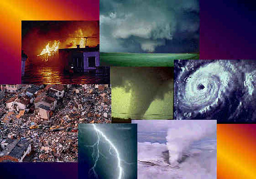
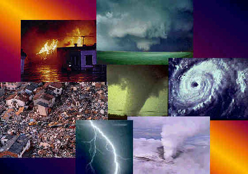

Understanding Disasters
Learn about various natural and man-made disasters, their impact, and management strategies.
Home || Disasters || Epidemiology || Fire || Hazardous Materials || Technology
Learn about various natural and man-made disasters, their impact, and management strategies.
